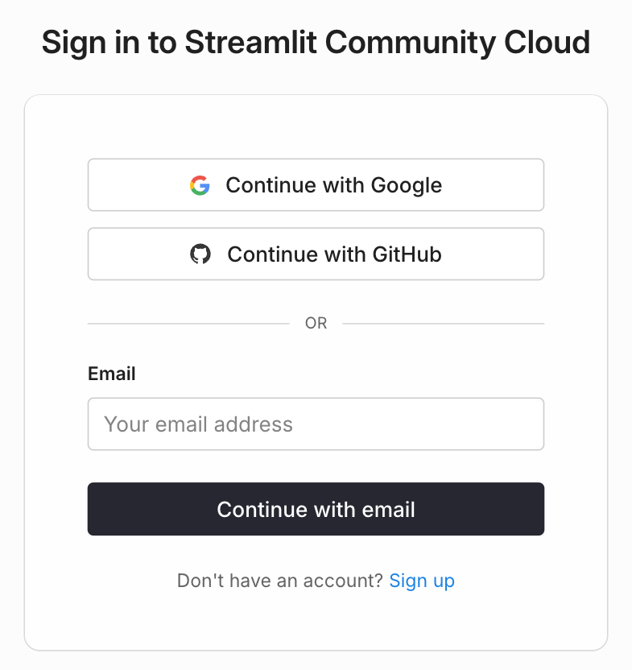
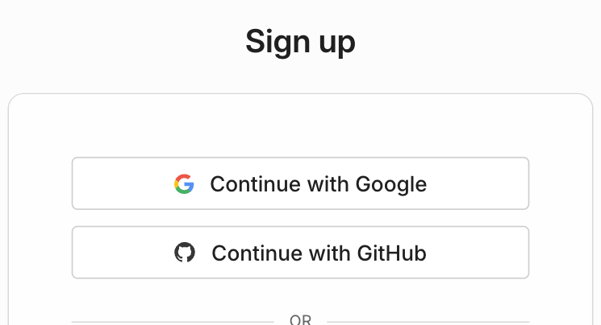

차시별 실습
교사용 접수대 ↗내 앱 주소 만들기

오늘은 내가 고친 앱 주소를 짝에게 보냅니다. 먼저 가입 없이 예제를 열고 한 줄을 바꿔 보세요. 가입할 때 쓸 메일함도 열어 두세요.
1. 예제에서 한 문장을 바꿔 보세요
1차시 코드 작업대 열기 ↗를 누르세요. 가입 없이 새 탭에서 열립니다.
- 세 줄짜리 코드 아래의 ▶ 실행을 누르세요. 두근두근 급식실이라는 제목과 오늘 우리 학교 점심이라는 문장이 보이나요?
- 셋째 줄의 따옴표 안만 오늘 다시 먹고 싶은 반찬은?으로 바꾸고 다시 실행하세요. 따옴표와 괄호는 그대로 둡니다.
확인 큰 제목은 그대로이고 그 아래 문장만 바뀌었습니다. 나중에 이 코드를 받을 수 있게 작업대 탭을 열어 두세요.
2. GitHub 계정을 만들고 이메일을 인증하세요
GitHub는 내 코드를 보관할 곳입니다. 이미 계정이 있으면 GitHub 로그인 ↗ 후 바로 3번으로 가세요.
- GitHub 가입 페이지 ↗를 엽니다. 이메일로 가입한다면 받은편지함을 열 수 있는 이메일, 비밀번호, Username(사용자 이름)을 입력하세요. 이미 쓰는 이름이라는 안내가 뜨면 이름 뒤에 숫자를 붙여 보세요.
- 사람인지 확인하는 문제가 뜨면 화면 안내에 따라 완료하세요. GitHub에서 보낸 메일을 열어 인증 링크를 누르거나, 인증 코드가 왔다면 GitHub 가입 창에 입력하세요.
확인 GitHub에 로그인한 뒤 오른쪽 위 프로필 메뉴에서 내 사용자 이름을 확인합니다. 이 이름은 잠시 뒤 앱을 공개할 때 다시 씁니다.
메일이 안 오면 입력한 주소와 스팸함을 확인하세요. 인증을 기다리는 동안 짝과 코드 작업대를 함께 써도 됩니다.
3. Streamlit Community Cloud에도 가입하세요
내 코드를 실행해 친구가 열 수 있는 주소를 만드는 곳입니다. 방금 만든 GitHub 계정으로 본인을 확인하면 Streamlit용 비밀번호를 한 번 더 정할 필요가 없습니다.
- Streamlit Community Cloud 열기 ↗. Continue to sign-in을 누르세요. 처음이라면 로그인 화면의 Don’t have an account? 옆 Sign up을 누르세요. 이미 가입했다면 로그인 화면에서 계속합니다.
- Continue with GitHub를 누르세요. GitHub 로그인 창이 뜨면 2번에서 쓴 계정으로 로그인합니다. Streamlit Community Cloud가 이메일을 확인하도록 허용할지 물으면 계정과 앱 이름을 확인하고 승인하세요.
- 첫 가입 정보 화면이 나오면 Primary email을 확인하고 필수 항목을 채우세요. 맨 아래 Continue를 누르세요. 이미 가입한 학생은 이 화면을 건너뛰고 작업 공간으로 들어갑니다.


가입 완료 작업 공간이 열리면 Streamlit 계정이 생긴 겁니다. 왼쪽 위 Workspaces에 경고 표시가 있으면 4번에서 내 GitHub 저장소를 연결하세요.
4. Streamlit에서 내 GitHub 파일을 읽게 해 주세요
앞 단계에서는 내 이메일로 로그인했습니다. 이제 내가 공개한 코드를 Streamlit이 읽을 수 있도록 연결합니다.
- Streamlit 왼쪽 위 Workspaces를 누르고 Connect GitHub account를 고르세요.
- GitHub로 이동하면 내 계정인지 확인하고 Authorize streamlit을 누르세요. 다시 로그인하라는 창이 뜨면 같은 GitHub 계정을 쓰세요.
연결 완료 Streamlit으로 돌아왔을 때 왼쪽 위에 내 GitHub 사용자 이름이 보입니다. 처음부터 내 이름이 보였으면 5번으로 가세요.
5. 내 코드를 파일로 받으세요
- 처음에 열어 둔 코드 작업대 탭으로 돌아갑니다. 내 문구가 맞는지 확인하고 편집창 위의 코드 받기 ↓를 누르세요. 받은
app.py에 내가 고친 세 줄이 들어 있습니다. - requirements.txt 받기 ↓를 누르세요. 파일 안의
streamlit한 줄은 앱 실행에 필요한 도구의 이름입니다. - 브라우저의 다운로드 목록이나 기기의 다운로드 폴더를 열어 두 파일을 찾으세요. 여러 번 받아
app (1).py처럼 숫자가 붙었다면 내가 고친 파일의 이름을app.py로 정리하세요.
올릴 파일 app.py와 requirements.txt, 두 개입니다. 작업대 탭을 닫았다면 코드 작업대 ↗를 다시 열어 문구부터 고치세요.
6. 내 GitHub에 저장소를 하나 만드세요
저장소(Repository)는 한 앱에 쓸 파일을 모아 두는 곳입니다.
- 새 저장소 만들기 ↗에서 Owner가 내 사용자 이름인지 확인하세요. Repository name에
lunch-app을 적습니다. - 공개 범위는 Public을 고르고, Add README는 꺼 둔 뒤 Create repository를 누르세요.
확인 화면 위에 내 사용자 이름 / lunch-app이 보입니다. 이미 같은 이름의 수업용 저장소가 있다면 그 저장소의 Code 화면에서 7번을 시작하세요.
7. 두 파일을 올리고 변경 사항을 저장하세요
- 빈 저장소 안내에서 uploading an existing file을 누르세요. 파일 목록이 이미 보인다면 위쪽 Add file에서 Upload files를 고르세요.
- 파일 두 개를 업로드 칸에 끌어 놓거나 choose your files를 눌러 고르세요. 두 이름이 보이면 아래에 첫 급식 앱이라고 변경 내용을 적고 Commit changes를 누르세요. 저장할 곳을 고르는 창이 나오면 현재 브랜치에 저장하세요.
확인 Code 화면 첫 목록에 app.py와 requirements.txt가 나란히 보여야 합니다. 목록 위 브랜치 이름도 보세요. 보통 main입니다.
8. 실행할 저장소와 파일을 골라 공개하세요
- Streamlit 작업 공간 ↗에서 오른쪽 위 Create app을 누르세요. 이미 만든 앱이 있는지 물으면 Yup, I have an app을 고르세요.
- 아래 세 칸을 채우세요. 예시의 ‘내 사용자 이름’ 자리에는 2번에서 확인한 이름을 씁니다.
- Repository
내 사용자 이름/lunch-app- Branch
main또는 7번에서 확인한 브랜치 이름- Main file path
app.py
세 칸을 확인한 뒤 Deploy를 누르세요. 앱을 준비하는 동안 잠깐 기다립니다.
공개 완료 주소 끝이 .streamlit.app인 화면에 내 제목과 내가 고친 문구가 보입니다.
저장소가 목록에 없으면 소유자와 저장소 이름을 직접 입력하세요. 그래도 찾지 못하면 4번의 사용자 이름과 7번의 Public 표시를 다시 보세요. 파일을 찾지 못했다면 GitHub 첫 목록의 대소문자와 파일 경로를 확인하세요.